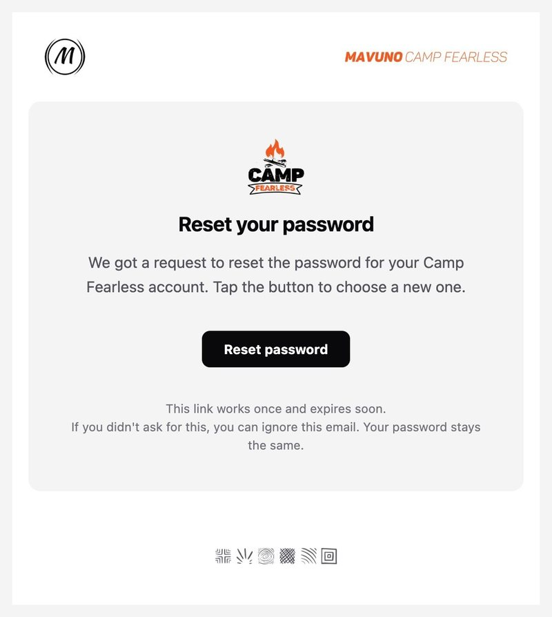
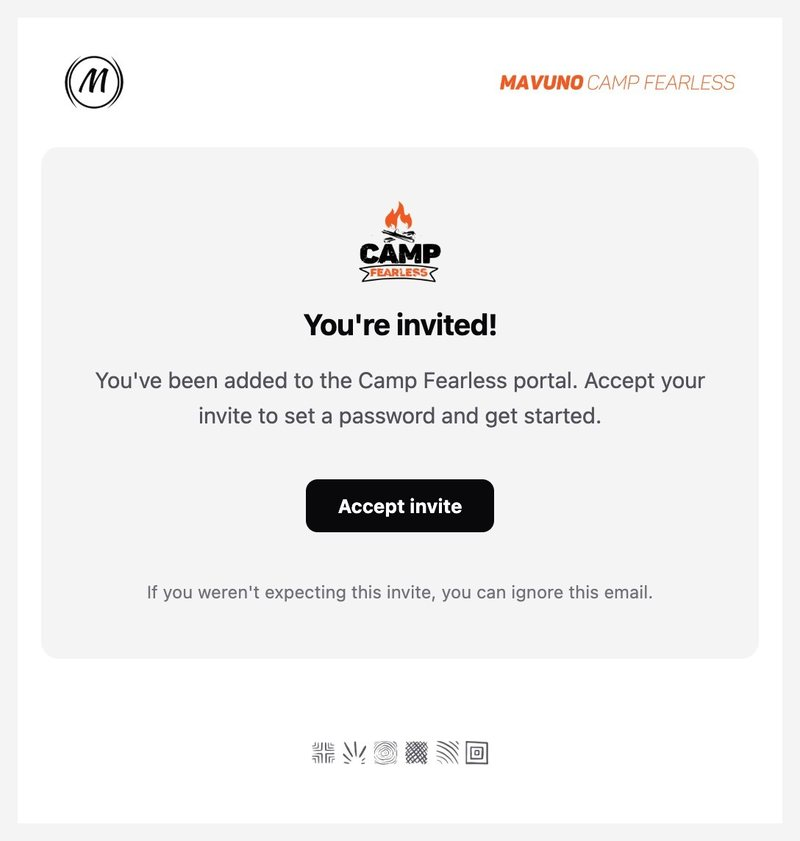
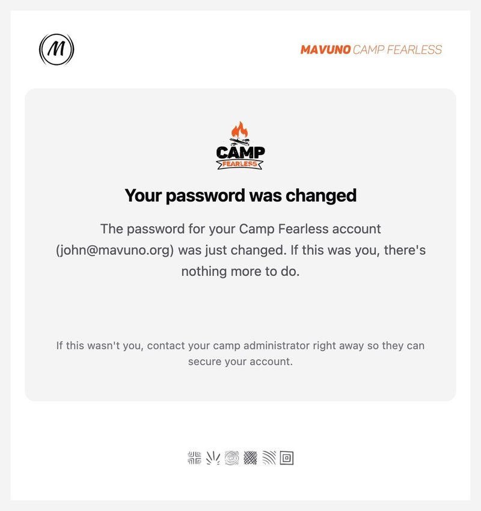

Registration and camp-day software for a church youth camp, designed and shipped to real families. Mavuno Church, Aug 2026 – ongoing.
Role
Lead Product Designer, product owner
Client
Mavuno Church
Timeline
Aug 2026 – ongoing
Platforms
Web: public site and staff portal
Team
Solo designer, with Chris, a developer friend, reviewing the backend
Overview
Camp Fearless is Mavuno Church's youth camp, run three times a year across many campuses. It was running on paper forms and loose spreadsheets, so nobody could see a camper's allergies early or knew how many people were really coming.
Planners couldn't see asthma or care needs until camp day. Baptism requests got lost. There was no reliable headcount per campus. Off-the-shelf church software was either far too heavy or priced as a monthly subscription a non-profit can't justify.
So I designed the whole thing: a public site where parents and campers register, and a staff portal where the registration desk checks people in, finance confirms payments and admins run the camp. I'm a product designer, not a programmer, and the point of this project is what that looks like when a designer owns every rule and every pixel and directs the build with precision. It's live and being used while registration is open.
What it does
One place for families, one for staff
For parents and campers
One welcome page lists the camps that are open, what to bring and what it costs. A parent registers one camper or a whole batch, adds emergency contacts and any medical or special-needs notes, pays by M-Pesa and gets a personal camper poster to download and share. If they lose it, a Find my poster page brings it back with their payment code and phone number.
For the registration desk and finance
Registrars check people in and out all day, register walk-ins and see a live roster. Finance confirms each M-Pesa payment against the Safaricom statement. Lead registrars and admins set up each camp, manage discounts and print reports.
For the people running camp
A dashboard shows who has registered, who has arrived and how the gender split looks. Tribes sort campers into balanced coloured groups for sports and sleeping areas. Staff only see what their role allows, and every important action is recorded in an audit log.
My role
I owned every decision about what the system does and why. I spoke to camp directors, finance volunteers and the registration desk, mapped the flows and designed every screen before it was built. Claude wrote the code; it never decided the product.
$30
a year to run, down from $240+ on the first hosting plan
~260
automated checks guarding the rules that must never break
3
camps a year it has to handle, with no developer needed to set up the next one
A designer who owns the logic can ship software that behaves exactly as designed.
Designed every screen in Figma on my own shadcn system before any code was generated, with light and dark values for every colour.
Wrote a rulebook the build has to follow: spacing, type, badges, toasts, dialogs, tables and even wording, like sentence case, "KES 1,000" and how an error reads. When something drifted I fixed the rulebook first, then the screen.
Tested everything on the live system, not just in mock-ups. I asked for the behaviour I wanted, then tried to break it.
Took on the money problem too: hosting, backups and a written plan so the church owns everything and never depends on me.
Designing for the desk
Decisions I'd defend
Undo instead of "are you sure?"
Check-in happens all day at a busy desk, so I used a 5-second Undo instead of a confirmation dialog. An accidental tap is possible, but fixing it is one tap. The same idea shows up when someone removes a tribe by mistake.
Camps change shape, so the system doesn't assume
Camp editions are named by the admin, like "Easter 2026" or "December 2026", instead of three fixed slots. Dates, fees, limits, welcome text and images are all set per edition. Mavuno runs three a year today, but a fourth needs no developer.
Everyone sees only what they should
What each role sees drives everything, from the sidebar to the table columns to medical details. That's more role setup, but far less exposure of children's information. Medical notes are capped at a short length so the system holds the minimum it needs.
People from other churches too
Outside campers are grouped under one "Invited" campus with their own church stored separately, so reports stay clean and the church name is still there when someone needs it.
One front door
I wanted campers to have one main site to go to, the welcome page, instead of a different link per task. Less to remember, less to get wrong.
Tribes
A feature I designed with the people who run camp
Midway through, the team wanted campers split into groups for sports, sleeping areas and hand tags. I started by thinking it through with them before drawing anything: girls and boys sleep in separate areas, MYF and MYA are separate camps, and groups should mix ages and campuses instead of clustering by who arrived together.
The first idea was a long list of balancing options. I cut it down to one simple rule, ages spread evenly, because a feature that confuses the admin won't get used. Admins choose how many tribes, name them and pick a colour for each, up to six. A tribe shows a coloured circle beside its name instead of a coloured tag, which read cleaner in the table.
I also designed for the bad day. What if a tribe has to be added or removed on camp day? Removing one asks for care and offers an Undo, and the screen keeps only what an organiser needs. I then tuned it in light and dark mode, including the shadow on the colour picker, until it matched every other popup in the system.
Money
Making manual payments fast and hard to get wrong
An automatic payment gateway was pushed to a later phase to hit the launch window, so for now parents pay to the church's M-Pesa Paybill and enter the transaction code from the SMS. Finance checks each code against the Safaricom statement. The goal is still an automatic M-Pesa prompt, so payments land in the system without anyone typing a code.
Until then, the screen does the careful work. The expected amount is shown next to what finance enters, and the result reads Matched, Short or Over. A statement can be imported from Excel to fill in the amounts, but it never verifies anything by itself: a person always presses Verify. A code that covers several campers is checked against the total for all of them.
One person can pay for another, so names don't have to match. The code does.
Small things that matter
The details I kept going back to
Warnings that don't teach people to cheat
When someone types a code that looks invented, or a discount code in the M-Pesa box, the form warns them to check it. My first version also showed what a real code looks like. I pulled that out, because people would use it to craft a believable fake. The message is now deliberately vague, the payment is flagged for finance to check first, and it's a hint, never a block. The same wording runs on the public form, the walk-in form and the facilitator form.
Emails that look like the camp
The system sends three account emails: reset your password, you're invited, and your password was changed. I designed them to match the product, with the type sized so the headline doesn't shout, the logo scaled down and the brand icons added as images since email apps don't print SVG. Then I sent myself a test to see them in a real inbox.
Looks, themes and loading
Staff can switch between light and dark and choose between a compact and a soft look. I checked every screen in each, adjusting shadows until cards read properly in dark mode without getting heavy in light. Loading uses skeleton screens that match the shape of the page, so nothing jumps when data arrives.
Designing with real-feeling data
I kept a demo version of the portal filled with sample campers, payments and tribes, so I could see each screen as it would look mid-camp instead of empty. It's also how I demoed every new idea before anything was built.



The advantage
The advantage that made it work
The people I was designing for were a message away: camp directors, finance volunteers and the registration desk. Registration opened while features were still being refined, so I watched how staff actually used it and cut or added things from what real use showed.
Challenges
A budget, and a system that kept changing
Near-zero budget
My first hosting choice would have cost $240 a year because church use sits outside its free terms. I moved it somewhere that costs about $30 a year, paid only in the months registration is open, and wrote a handover plan so the church owns everything.
Changing it while it's live
Every change had to be safe to ship while families were registering. The rules that matter, like never selling the last place twice, never reusing a payment code and never letting a role see what it shouldn't, are covered by automated checks, so I could keep improving the screens without worrying about breaking them.
Status
Live, and treated as an MVP
Camp Fearless is in use while registration is open. It replaced paper with one place where families register, finance reconciles and registrars check people in. I ship, watch how staff use it and keep refining week by week.
Next is the automatic M-Pesa prompt for payments. Results from the December camp, like how many campers registered and how much time the desk saved, will be added after it runs.
Figma held the flows, a rulebook held the standards, and tests held the behaviour.